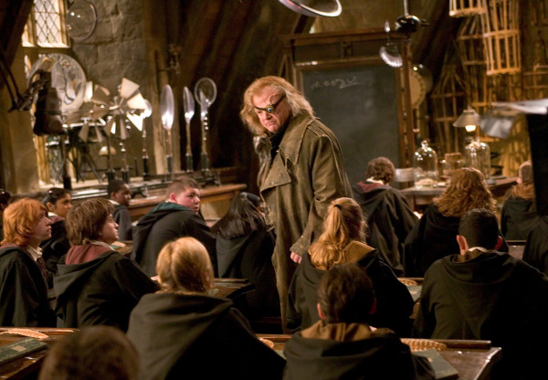

Dark Arts taught students to use numerous forms of Dark Magic, including the Unforgivable Curses and possibly how to conjure Fiendfyre. When the school had only just been founded in the late 900s, one of the schools founders, Salazar Slytherin, had wanted to teach the Dark Arts, but the inclusion of the subject was opposed by the other founders. It was possible that he initially constructed the Chamber of Secrets as a place to teach his students Dark Magic.
It only properly became a subject at Hogwarts (and a mandatory core class for all students) during the 1997–1998 school year after Lord Voldemort and his Death Eaters took over both the school and the British Ministry of Magic. It was taught by Amycus Carrow. It replaced Defence Against the Dark Arts that school year.
After Lord Voldemort and his forces were defeated, the subject was discontinued and returned to being Defence Against the Dark Arts.
Flying
Flying, also known as Broom Flight Class, was the class that taught students how to fly by riding on magic flying broomsticks. Students learned both how to handle a broom and progressively worked on various techniques and manoeuvres that could be performed while in flight, as well as receiving proper instructions on the subject of proper broom care and maintenance. This subject was the only one that required physicality.
Flying class was only mandatory to Hogwarts first years and optional for second years and above. Students who continued to take this class usually either had an interest in joining their House Quidditch teams or they just really enjoyed flying and may have chosen to continue with the subject to improve their skills.
Flying classes took place outside in and above the Castle Courtyard. Required equipment included a broomstick, although first-year students were not permitted to have their own broomstick, instead the school provided them.